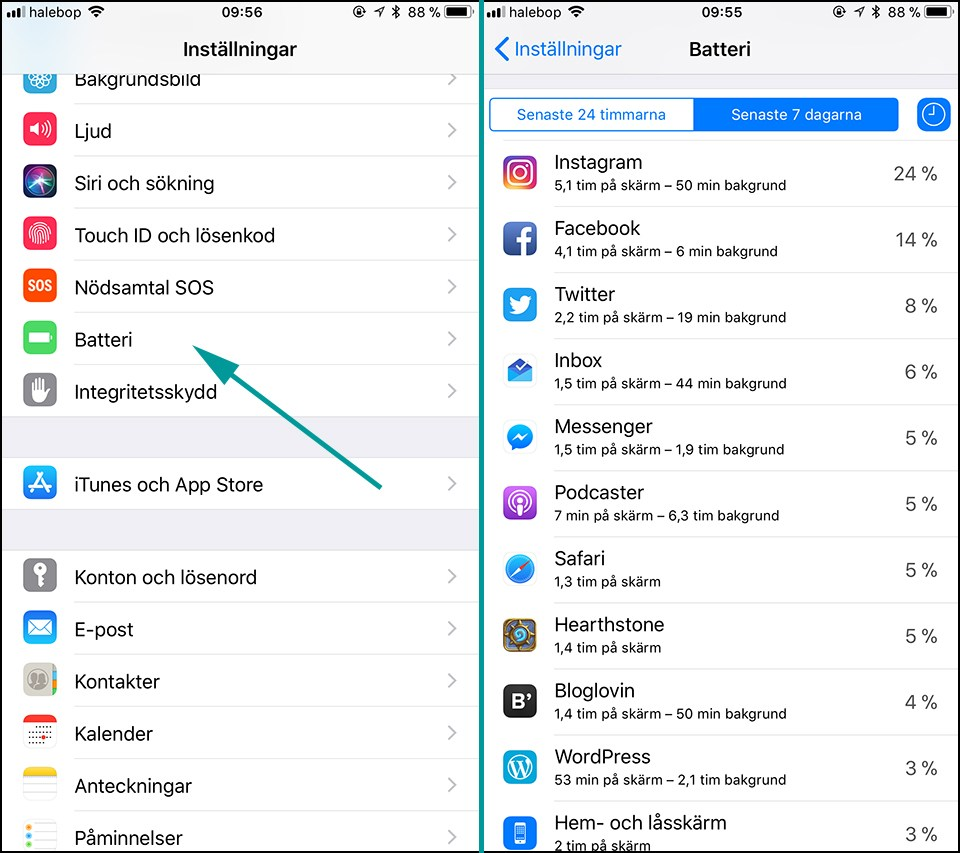

Spara batteri i iOS 11 med dessa inställningar
Om du har en iPhone med iOS 11 så har du säkert märkt att ditt batteri börjat dö lite snabbare än tidigare. Det finns flera anledningar till detta – t.ex. att mjukvaran är anpassad efter de senaste modellerna så med en lite äldre iPhone blir det inte lika optimerat. Som tur är finns det flera inställningar du kan göra för att komma runt problemet!
Stäng av auto för ljusstyrkan på skärmen
Stäng av auto för ljusstyrkan på skärmen Att skärmen automatiskt anpassar ljusstyrkan kan ju vara smidigt på många sätt, men när det är väldigt ljust så dras ljusstyrkan ofta upp väldigt högt vilket tar mycket batteri. Inställningen för att stänga av denna funktion har gömts lite djupare i inställningarna än de var tidigare.Gå till: Inställningar > Allmänt > Hjälpmedel > Skärmhjälpmedel och stäng av automatisk ljusstyrka
Du kan enkelt anpassa ljusstyrkan manuellt genom att svepa upp så du får fram kontrollcentret och sedan dra ned på ljusstyrkan där.
Undersök vilka appar som drar mest batteri
Genom att gå till Inställningar > Batteri kan du se vilka appar som drar mest batteri över tid. Om du trycker på klock-symbolen kan du också se hur mycket batteri de dragit i bakgrunden. Detta kan dels ge dig en bättre bild av var ditt batteri tar vägen och vilka appar du bör stänga ned när du inte använder dem. Dels kan det också ge en fingervisning till vilka appar som du bör avaktivera bakgrundsuppdateringar för (se nästa punkt).
Avaktivera bakgrundsuppdateringar
Något som många appar gör automatiskt idag är att uppdatera sig i bakgrunden så att när du kommer in i appen får du upp nytt innehåll automatiskt. Det är såklart en snygg funktion rent användarmässigt men att appar uppdaterar sig i bakgrunden drar såklart batteri.Gå till: Inställningar > Allmänt > Bakgrundsuppdatering
Här kan du välja att antingen slå av för de mest batterikrävande apparna som du upptäckte på förra punkten. Du kan även välj att stänga av denna funktion helt och hållet. Det innebär att du själv får dra ned i en app som är igång för att uppdatera innehållet.
Aktivera strömsparläget med ett knapptryck
iPhone har ett väldigt smart strömsparläge som i iOS 11 är mer tillgängligt än någonsin. Nu har du nämligen en knapp för detta i kontrollcentret. Det föreslås för dig automatiskt med en push-notis när du når 20% batteri men jag har börjat slå igång sparläget manuellt långt tidigare under dagar när jag är på språng och vill att batteriet ska räcka längre.Det strömsparläget gör är att avaktivera funktionen ”Hej Siri”, sluta hämta email, stänger av bakgrundsuppdatering av appar och sätter skärmlåset till 30 sekunder.
Bara svep uppåt för att komma till kontrollcentret och tryck på batteri-knappen.
(Om du inte ser denna knapp får du gå till Inställningar > Kontrollcenter > Anpassa reglage och trycka på den gröna plus-knappen för Strömsparläge.)
Stäng av funktionen ”Hej Siri”
Om man har denna funktion aktiverad så lyssnar telefonen konstant för att kunna uppfatta orden ”Hej Siri”, som kan användas för att ge kommandon till Siri utan att röra telefonen. En funktion som de är få som använder särskilt ofta skulle jag säga.Det är omdebatterat hur mycket batteri denna funktion faktiskt drar, men en fingervisning är ju att Apple själva avaktiverar denna i strömsparläget.
Gå till: Inställningar > Siri och sökning och avaktivera Lyssna efter ”Hej Siri”.